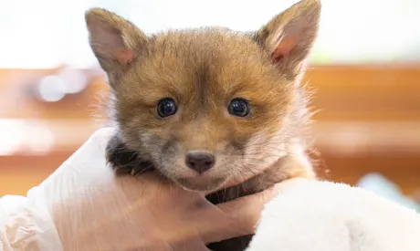
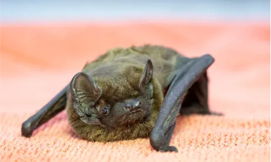
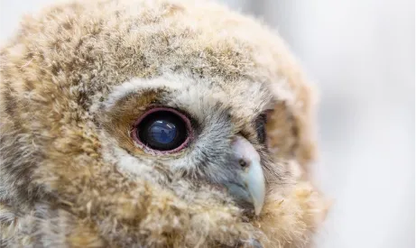
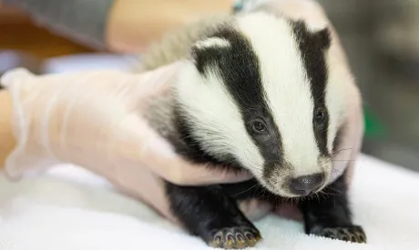
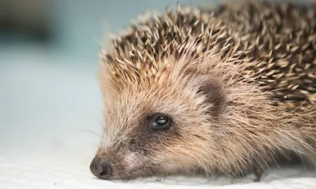

The red fox is one of the UK’s most iconic species. Sadly, 70% of wild foxes do not make their first birthday, and an estimated 100,000 foxes are killed on UK roads, every year.Many other foxes fall victim to litter and netting, in which they get entangled. WAF rescues hundreds of foxes, every year.

There are 18 species of bat in the UK, 17 of which are known to be breeding on our shores. All 18 species of bat are protected under the Wildlife and Countryside Act.A reduction in food source is a major threat to bats. The use of pesticides, intense farming, and habitat loss, have all reduced the number of insects on which bats rely as their food source.

There are 5 species of owl in the UK, including the Barn owl, Little owl, Tawny owl, Long-eared owl and Short-eared owl. Habitat destructions, road traffic accidents (RTAs), and the use of pesticides (the owl’s prey consumes vegetation with the pesticide on it and the owl digests the prey), are all threats to wild owl populations.

The badger is a living symbol of the great British countryside and is the UK’s largest land predator. But threats, such as habitat loss, the badger cull (which could see over 50% of the badger population killed), and road traffic accidents (with an estimated 50,000 badgers being killed on UK road every year) and all constant dangers to wild badger populations.

Shockingly, the UK hedgehog population has declined by 96% in the last 60 years, due to habitat loss. So, when we rescue an individual hedgehog, we are not just giving that individual a second chance, but we are also working to safeguard the species.hedgehogs will be cared for at our rescue centre until they are strong enough to be released back to the wild.
There are an estimated 18 million pigeons in the UK. Pigeons are highly sociable animals and actually mate for life. Sadly, an estimated 3 million are killed, each year.Throughout the world, people live side-by-side with pigeons, sharing the countryside, gardens, parks, sidewalks, and other outhouses and lofts thatpigeons have occupied.